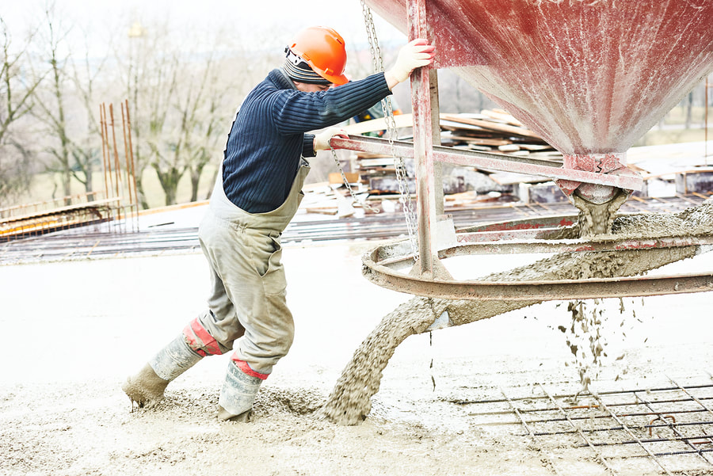
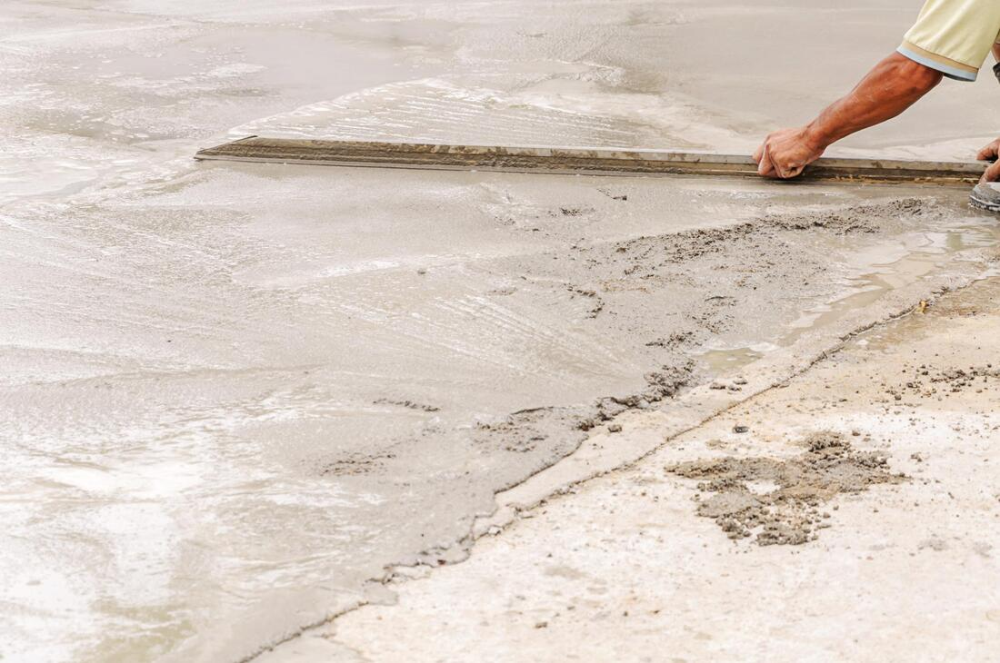
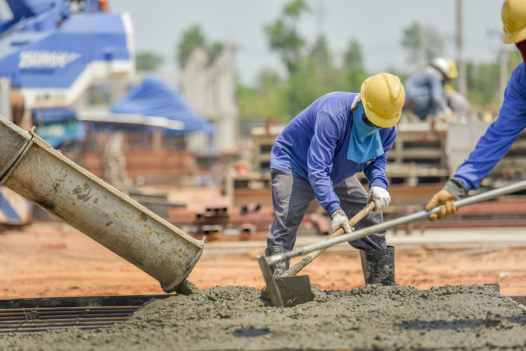

Houses
Most calls are a driveway that has scaled, a patio that pitches toward the house, or a walk that has become a trip edge. We replace the failed concrete, set the slope, and finish it for winter in Mahoning County.
Youngstown, Ohio
Driveways, patios, stamped and stained flatwork, and asphalt paving for houses and small lots. Quoted from the property, not from a photo.
Tell us the town, what you want poured or replaced, and a phone number. The form includes a source field so we know the lead came from Concrete Youngstown. Do not send payment information.
Services
Start with the surface you need. A salt-scaled driveway, a backyard patio, and a shed pad are not the same job, even though all of them are concrete.

Patterns pressed into fresh concrete for patios, walks, and driveways. Choose the pattern before the pour. Stamping finishes new flatwork. It does not repair a slab that has already cracked or settled.
Details
New and replacement driveways for homes around Youngstown. The job covers removal, a compacted base, the pour, and a finish sloped off the garage. Thickness follows the vehicles that will use it.
Details
Asphalt drives and small parking areas where a flexible surface fits the lot. Grading, a stable base, and a paved layer that sheds water are the work. The pavement itself is not a drain.
Details
Color on a sound slab when the concrete is still solid. It changes the look of a patio, walk, or floor. Stain will not bridge cracks or level a section that has settled.
Details
A level slab outside the back door for a table, a grill, and a drier path. Slope, joints, and thickness are set for Mahoning Valley freeze-thaw, not only for a clear summer weekend.
Details
Sidewalks, aprons, shed pads, and other flatwork beyond a full driveway or patio. Each pour is formed for the load it will carry, with joints and drainage set before the concrete truck arrives.
Details
Most calls are a driveway that has scaled, a patio that pitches toward the house, or a walk that has become a trip edge. We replace the failed concrete, set the slope, and finish it for winter in Mahoning County.

Shops and houses sometimes need a parking pad, an apron, or a short run of asphalt rather than a backyard patio. The scope is still flatwork. We are not paving highways or pouring building foundations.
Before you call
Driveway, patio, walk, pad, or asphalt. If the old surface has failed, say so. Repair and replacement are different estimates.
Clay soils in the valley hold water. A truck that cannot reach the forms changes the labor. Both show up when we stand on the lot.
Broom finish for most drives. Stamp or stain when the slab is new or still sound and you want color or pattern. We will say if the finish you like is the wrong one for winter.
There is no honest flat price, because the number moves with square footage, thickness, removal, truck access, and the finish. A broom-finish replacement on a flat lot is a different job from a stamped patio with steps and a rebuilt base. We measure the property and send a written estimate. A photo is enough to start the conversation. It is not enough to price the work.
Yes. That is the usual driveway call around Youngstown. Salt and freeze-thaw scale the surface and open cracks until the slab is loose underfoot. If it is pitted down to the stone, rocking, or heaving, replacement outlasts a skim coat. We look at the base and the drainage before we recommend a full tear-out.
We do both, plus plain broom-finish flatwork. Broom finish is the right driveway surface for most houses. Stamped patterns and stains are for patios, walks, and the occasional drive when you want color or the look of stone. The pattern has to be chosen before the pour. Stain is only for a slab that is still sound.
Usually, yes, if the slab is cracked through, settled, or too high to meet the garage or the sidewalk. A thin layer over a moving slab cracks along the old lines. If one panel is still solid and at the right height, we can sometimes leave it and tie the new concrete to it. We make that call on the lot, not over the phone.
Driveways are common, and we also pour patios, private walks, aprons, and small pads for houses and businesses around Youngstown. A shed pad and a parking pad are everyday work. Road rebuilding and building foundations are not. If you can describe the flatwork, we can tell you quickly whether it is in scope.
Call (330) 293-2914 or send the details. We price the job from the property.